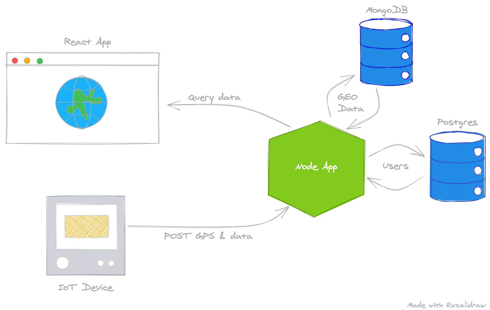

Introduction
About Me
Hi there! My name is Duane Bester. I'm an electrical engineer who has been writing professional software for over ten years. I've been involved in various different startups with projects that have ranged from Virtual Reality, Sensors and Hardware Design, to full stack web applications, and pipelines ingesting 100's of thousands of articles a day. This has given me the ability to use many software languages and frameworks over the years. I've come to understand what good software engineering practice looks like, and will go over this in the following chapters. I believe in learning by doing, so we will skip a lot of mundane programming theory and build something practical in a short amount of time. We will start simple and keep things simple. A lot of code "out there" follows Object Oriented programming and tries to do crazy dependency injection patterns, etc. While I'm not for or against this, we will be using a more functional style where we try to compose our functions and move complexity to the edges of our program. If this sentence didn't make sense, that's okay! There is an excellent video of writing procedural code, refactoring to object oriented code, and then functional code by Rafal Dittwald. The title mentions the software language Clojure, but fear not! His examples are written in JavaScript.
Plot
Imagine we have various GPS data; perhaps car accidents, or windmills, or oil wells. We would like to display our data, perferrably on a map, in a React application. We also want to save the Geo data in Mongo and User data in Postgres at the same time. The User data will be for our users to create accounts and login. The app will have a robust RESTful API written with the Express framework in Node.js. We will also leverage Docker to deploy this application to any cloud provider. I'll provide additional, optional, videos at the end of the course to add GraphQL to our application, but these won't go into the depth of GraphQL fundamentals.
This book will cover getting up and running with the basics of a full-stack application:
- React
- Displaying Data with Mapbox
- Material UI - React Components
- Loading Screens / Skeletons
- React Testing Library
- Node.js
- Express API Framework
- Middleware
- Testing
- Unit Tests
- Integration Tests
- Authentication
- GraphQL
- Express API Framework
- MongoDB
- Official Node Driver
- Postgres
- Sequelize
As well as the tools & services:
- Docker
- cURL
- VSCode
- Git & GitHub
- Cloud Providers
- Digital Ocean
- Google Cloud
- Amazon Web Services
- Mongo Atlas
Setup API Server
For our Map project, we need a robust and easy to use API Server. Luckily Express.js fits these requirements and is a nice API framework to use. "Express is a minimal and flexible Node.js web application framework that provides a robust set of features for web and mobile applications."
Why not Koa?
A note about Koa. Koa is robust, minimal, and widely regarded as the next Express.js framework. However, I firmly believe that for beginners it's easier to understand Express. Working through this course will definitely go a long way to understanding Koa as well.
The most basic Express app that returns "Hello world" for all GET requests is:
const express = require('express');
const app = express();
const port = 8080;
app.get('/', (req, res) => {
res.send('Hello World!')
});
app.listen(port, () => {
console.log(`Example app running on port: ${port}`)
});
I encourage you to read the overview on the Express to gain some intuition
Prerequisites
Tools
- Install Node LTS
- Install Docker Desktop
- Make sure Docker is running after install!
- Install VSCode
- Install Git
- Apple ships Git with XCode, so on a mac you shouldn't need to install it.
Accounts
- Create a GitHub Account
- Create a DigitalOcean Account
- Create a Mapbox Account
Verifying Installs
Open a terminal, type and enter:
> docker ps
# Returns: CONTAINER ID IMAGE COMMAND CREATED STATUS PORTS NAMES
Same terminal, type and enter:
> node --version
# Returns: v14.15.4 or similar
Same terminal, type and enter:
> git --version
# Returns: git version 2.24.3 (Apple Git-128)
Create Project
Create a new directory, map-api and then change directory into it:
> mkdir map-api
> cd map-api
Create an NPM project:
> npm init -y
Install dependencies
> npm i express nodemon
App files
Note: In the root directory of the project
Make a new file called index.js.
> touch index.js
Make a new file called app.js.
> touch app.js
Make a new file called Dockerfile.
> touch Dockerfile
Make a new file called .dockerignore.
> touch .dockerignore
Make a new file called docker-compose.yml.
> touch docker-compose.yml
Basic Express App
Edit app.js:
const express = require('express');
const app = express();
app.get('/', (req, res) => {
res.send('Hello World!');
});
module.exports = app;
Edit index.js:
const app = require('./app');
// Default the port to 8080
const port = process.env.PORT || 8080;
app.listen(port, () => {
console.log(`App running on port: ${port}`)
});
Edit package.json, add a "dev" property to the "scripts" object:
"scripts": {
"dev": "nodemon index.js"
},
Run the App
We can now run our very basic app:
> npm run dev
If we go to localhost:8080, we should see Hello world! This is cool, but we have some things to understand about Express apps. For now, let's create a simple Dockerfile for our very basic application...
Docker Files
Edit the Dockerfile:
FROM node:lts-alpine
COPY . .
RUN npm i
EXPOSE 8080
CMD [ "node", "index.js" ]
Edit the .dockerignore file:
.git
node_modules/
Edit the docker-compose.yml file:
version: '3.8'
services:
mongo:
image: 'mongo:latest'
container_name: 'mongodb'
environment:
- MONGO_INITDB_DATABASE=map
- MONGO_INITDB_ROOT_USERNAME=user
- MONGO_INITDB_ROOT_PASSWORD=pass
volumes:
- ./mongo-volume:/data/db
ports:
- '27017-27019:27017-27019'
At this point, we can run the following command to start up a Mongo Database!
docker-compose up -d
It will take a while, but your Mongo instance should come up. We can verify by running:
> docker ps
# Returns:
# CONTAINER ID IMAGE COMMAND CREATED STATUS
# 6bba9117fccc mongo:latest "docker-entrypoint.s…" 35 seconds ago Up 34 seconds
To stop the Mongo Container, run:
docker-compose down --remove-orphans
We can add our Postgres DB Service as well, add the following postgres: section below the mongo: section:
mongo:
...
postgres:
image: 'postgres:12'
container_name: 'postgresdb'
environment:
- POSTGRES_DB=map
- POSTGRES_USER=user
- POSTGRES_PASSWORD=pass
ports:
- '5432:5432'
Now we can run docker-compose up -d and docker-compose down to start and stop both Mongo and Postgres!
The up command will create and start all containers in the docker-compose.yml file.
Similarly, the down command will stop and remove all containers in the docker-compose.yml file.
We can also run:
> docker-compose up --no-start
> docker-compose start mongo
To just start the Mongo container. And then:
> docker-compose stop mongo
To stop just the Mongo container. Note that this doesn't remove/delete the container, just stops it from running.
Create GitHub Repo
Login to GitHub and Create a Repository.
Give it a name, like map-api.
I'll keep mine public and I won't create the README, .gitignore, or License files at this time.
Click Create Repository.
It will then display instructions on how to add code... Head back to VSCode. In the terminal, in the project directory, enter:
> git init
# Returns: Initialized empty Git repository ...
At this point, we want to create a
.gitignorefile!
touch .gitignore
Any files or folders we list in the .gitignore will be ignored by Git and won't be pushed to our remote repository.
Edit .gitignore and add node_modules/, and mongo-volume/:
node_modules/
mongo-volume/
Then enter;
> git add --all
> git commit -m "First commit - basic express app"
# Returns: create mode...
> git branch -M main
The instructions on GitHub will tell you to add the remote origin, something like this (replace <your-username> below):
> git remote add origin git@github.com:<your-username>/map-api.git
We can now push our code to GitHub! Enter;
> git push -u origin main
Now if we refresh the GitHub page with the instructions on it, it will have all of our code!
Design and Build API
One of the biggest problems with software today is that people do not spend enough time in the "design" phase. It has become easier to iterate and change code, but if we spend some extra time up front and think through our system, we will mitigate a lot of potential changes.
Why are we using two different databases?
For the purpose of this course, it's to show you how to setup two different kinds of databases. In reality, we could use either one for Users and Data with GPS coordinates. Mongo is more freeform and has a nice way to query and aggregate with GPS. Postgres is relational and suites models that are connected to eachother. For example, if we have a User, and that user has a few addresses, we have a One To Many relationship. We could get Mongo to play well with relationships, and we can make Postgres aggregate based on latitude/longitude, but we will learn a bit about both and leverage their strengths.
My advice for a real world application: If you don't know how your data will be structured and connected, prototype with a NoSQL database such as Mongo. If you have well-defined models that have structured relationships go with Postgres.
So right now our system might be something like this:

We can then think of what we want our API endpoints to look like. For retrieving Users, perhaps something like:
| Operation | Request Method | Request Path | Response Status | Response Body |
|---|---|---|---|---|
| Get Users | GET | /api/<version>/users | 200 | [User] |
And if we wanted to just retrieve a User by the user's ID, we can add an /:id to the Path of the above to make a new endpoint:
| Operation | Request Method | Request Path | Response Status | Response Body |
|---|---|---|---|---|
| Get User By ID | GET | /api/<version>/users/:id | 200 | User |
It's usually best practice to version API's. We can then support multiple versions of the Get Users endpoint.
For "CRUD" (Creating, Retrieving, Updating and Deleting) Users, a flushed out API might look like this:
The
5in the Rquest Path below represents the User's ID
| Operation | Request Method | Request Body | Request Path | Response Status | Response Body |
|---|---|---|---|---|---|
| Get Users | GET | /api/v1/users | 200 | [User] | |
| Get User By ID | GET | /api/v1/users/5 | 200 | User | |
| Create User | POST | User | /api/v1/users | 201 | User |
| Update User | PUT | User | /api/v1/users/5 | 200 | User |
| Delete User | DELETE | /api/v1/users/5 | 204 |
Models
A User, to us, would at least need properties such as:
- First Name
- Last Name
But what about on the backend? We'd probably also need:
- ID
- Password
- Date Created
- Date Updated
And perhaps we'd like to support User sessions?
- Session ID
And tracking the User's last login?
- Last Login Date
And supporting forgot password flows?
- Phone Number
- Email Verified
- Verification Code
The list goes on and on... For now, let's start simple:
User
- ID
- First Name
- Last Name
- Password
- Date Created
DataEntry
- ID
- Name
- Reading (Value)
- Latitude
- Longitude
- Date Created